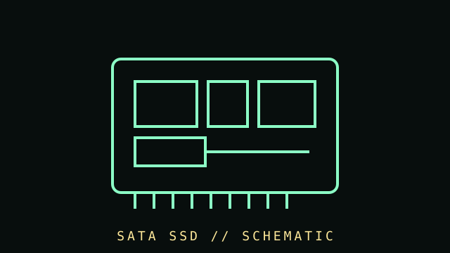

[ SUBCATEGORY DIRECTORY // 09 FILES // 133 PART RECORDS ]
Browse SATA SSD subcategories
Each model has an individual detail page and unique local schematic.
Browse model records, manufacturer sources, compatibility and preservation notes.
OPEN SUBCATEGORY FILE →SUBCATEGORY FILE // 10 PART RECORDSMainstream SATA SSD modelsBrowse model records, manufacturer sources, compatibility and preservation notes.
OPEN SUBCATEGORY FILE →SUBCATEGORY FILE // 26 PART RECORDSValue-oriented SATA SSD modelsBrowse model records, manufacturer sources, compatibility and preservation notes.
OPEN SUBCATEGORY FILE →SUBCATEGORY FILE // 02 PART RECORDSPerformance and endurance SATA SSDsBrowse model records, manufacturer sources, compatibility and preservation notes.
OPEN SUBCATEGORY FILE →SUBCATEGORY FILE // 25 PART RECORDSModern 2.5-inch SATA SSD modelsBrowse model records, manufacturer sources, compatibility and preservation notes.
OPEN SUBCATEGORY FILE →SUBCATEGORY FILE // 03 PART RECORDSLegacy client SATA SSD modelsBrowse model records, manufacturer sources, compatibility and preservation notes.
OPEN SUBCATEGORY FILE →SUBCATEGORY FILE // 32 PART RECORDSEnterprise SATA SSD modelsBrowse model records, manufacturer sources, compatibility and preservation notes.
OPEN SUBCATEGORY FILE →SUBCATEGORY FILE // 10 PART RECORDSmSATA SATA SSD modelsBrowse model records, manufacturer sources, compatibility and preservation notes.
OPEN SUBCATEGORY FILE →SUBCATEGORY FILE // 10 PART RECORDSM.2 SATA SSD modelsBrowse model records, manufacturer sources, compatibility and preservation notes.
OPEN SUBCATEGORY FILE →[ COMPONENT RECORD // SATA SOLID-STATE ]
SATA solid-
state drives.
A SATA SSD stores data in NAND flash and uses a controller to manage mapping, error correction, wear leveling, and garbage collection. It has no moving platters and commonly replaces a 2.5-inch HDD.

CLASS RECORD: SATA SSDs. A 2.5-inch SATA drive and an M.2 SATA module can use the same protocol in different physical formats; neither implies NVMe.
Reference specifications
| Interface | SATA Revision 3.x supports a 6 Gb/s signaling rate; protocol overhead means user payload throughput is lower than the raw link rate. |
|---|---|
| Form factor | 2.5-inch SATA devices often use 7 mm or 9.5 mm height; M.2 SATA modules have board-specific lengths such as 2242 or 2280. |
| Flash & endurance | NAND type, controller, DRAM/cache design, capacity, rated TBW, and warranty vary by exact model. TBW is a rating, not a forecast of a particular drive's lifespan. |
| Features | TRIM, SMART reporting, encryption, power-loss behavior, and firmware update methods are model/host dependent. |
Migration & maintenance
- Check SATA data and power connectors, device height, operating-system support, and BIOS boot mode before replacing a disk.
- Enable the operating system's normal TRIM support; do not run traditional defragmentation schedules on SSDs without a specific reason.
- Check firmware notes and SMART status with vendor tools. Keep backups: SSD controllers and flash can fail without the mechanical warning signs of HDDs.
- For archival retention, power-off storage is not a substitute for periodic integrity checks and multiple independent copies.
- Use encryption-aware migration procedures if the drive or operating system uses hardware encryption.
Sources & further reading
- SATA-IO — SATA specificationsPrimary organization for SATA interface specifications.
- Crucial — SSD endurance and SMART guidanceManufacturer educational reference; use exact-model data sheets for ratings.
- Kingston — SSD TRIM and garbage collectionManufacturer explanation of flash-maintenance behavior.